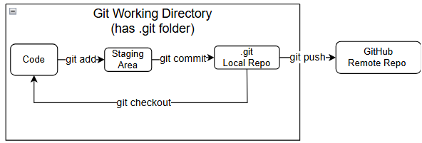

1.6 Git, GitHub, and Managing Scientific Projects#
In the previous sections, we learned how to set up a scientific computing environment, organize files and directories, manage Python environments, and create and execute Jupyter notebooks. We will now bring these concepts together and explore how to organize, maintain, and share projects.
In this notebook, we will introduce Git, a version control system that allows us to track changes to our files, and GitHub, an online platform that allows us to share and collaborate on projects. We will also establish the procedures we will use throughout this course to acquire instructional materials and manage our own computational work.
1.6.1 Managing Scientific Computing Projects#
Organizing a Scientific Computing Project#
A scientific computing project typically consists of more than a single Python program or Jupyter notebook. For example, consider a project in which we are collecting and analyzing environmental data from a series of sensors. Such a project might include:
Experimental data collected from sensors.
Jupyter notebooks used to explore and analyze the data.
Python scripts containing reusable code.
Figures and other results generated through data analysis.
Documentation describing the project and its methodology.
Information about the software required to perform the computations.
As a project grows, it becomes increasingly important to organize these resources in a meaningful and consistent manner. One approach would be to organize the project using a directory structure such as the following:
air_quality_project/
notebooks/
scripts/
data/
results/
README.md
environment.yml
The directories provide locations for different types of files, while the README.md file describes the project and the environment.yml file specifies the software environment required to perform the computations. We will explore these and other commonly encountered project files later in this notebook.
There is no single directory structure that is appropriate for every scientific computing project. The organization of a project will depend on its objectives, the types of data being collected, the computational methods being used, and the manner in which the results will be shared.
Version Control#
Scientific computing projects evolve over time. As we develop a project, we may modify our code, correct errors, incorporate new data, or explore alternative computational approaches. In the process, we may find that we want to return to an earlier version of our work.
One approach is to save multiple versions of a file using different filenames, such as:
air_quality_analysis.ipynb
air_quality_analysis_v2.ipynb
air_quality_analysis_v3.ipynb
air_quality_analysis_final.ipynb
air_quality_analysis_final_revised.ipynb
Although this approach may be manageable for a small project, it can quickly become difficult to keep track of what changes were made, when they were made, and why they were made. The problem becomes even more complicated when a project contains multiple interconnected files or when several people are contributing to the same project.
A version control system provides a systematic way to track changes to the files associated with a project. Rather than creating a new filename every time we modify a file, we can maintain a history of changes to that file.
Version control allows us to:
Record the state of a project at different points in time.
Document changes made during the development of a project.
Examine and recover earlier versions of files.
Experiment with alternative approaches without losing previous work.
Coordinate contributions from multiple people.
In this course, we will use Git to manage the version history of our computational projects.
1.6.2 Understanding Git and GitHub#
Although Git and GitHub are closely related, they are two distinct technologies. Git is software that runs on your computer and manages the version history of a project, while GitHub is an online platform that hosts Git repositories and provides tools for sharing and collaborating on projects.
What Is Git?#
Git is a free and open-source distributed version control system that was originally developed in 2005 to support the development of the Linux kernel. Although Git was developed for managing software projects, it is widely used today for managing scientific computing projects, documentation, educational resources, and other digital materials.
When we place a project under Git version control, we create what is known as a Git repository. A Git repository contains the information necessary to track the history of the files that we have placed under version control. Consider the scientific computing project introduced in the previous section. If we initialize a Git repository within our project directory, Git creates a hidden directory named .git:
air_quality_project/
.git/
notebooks/
scripts/
data/
results/
README.md
environment.yml
The .git directory contains the version history, configuration information, and other information Git uses to manage the repository. We do not normally interact directly with the contents of this directory. Instead, we use Git commands to manage our repository.
It is important to understand that placing a directory under Git version control does not mean that every file within that directory is automatically tracked, nor does Git automatically record a new version every time we save a file. We decide which files to track and when to record changes to those files.
A recorded snapshot of the project is known as a commit. As we develop our project, we create a series of commits that document its evolution over time.
Git operates locally on our computer. We can create a repository, modify files, record commits, and examine the history of our project without an internet connection or a GitHub account.
What Is GitHub?#
GitHub is an online platform for hosting Git repositories. By placing a copy of a Git repository on GitHub, we can make our project accessible from other computers and, if we choose, make it available to other people.
The Jupyter Book you are using in this course is an example of a project developed using Git and GitHub. The source notebooks and other files associated with the book are maintained in a Git repository hosted on GitHub, and the published book is made available through a service called GitHub Pages.
GitHub is not the only platform that hosts Git repositories. Other platforms include GitLab and Bitbucket. Git itself is independent of these platforms.
Git |
GitHub |
|---|---|
A distributed version control system |
An online repository hosting and collaboration platform |
Runs locally on your computer |
Provides internet-based services |
Tracks the version history of files |
Hosts and provides access to Git repositories |
Can operate without an internet connection |
Requires an internet connection to access its online services |
Does not require a GitHub account |
Requires an account to create and manage your own repositories |
Throughout this course, we will use GitHub both to acquire computational resources developed by others and to share computational resources that we develop ourselves.
Local and Remote Repositories#
One of the powerful features of Git is that copies of a repository can exist on multiple computers. Each copy can maintain its own version history, and Git provides mechanisms for exchanging changes between these repositories.
A local repository is a Git repository that resides on the computer on which we are working. A remote repository is another repository that our local repository can communicate with, often one hosted on a platform such as GitHub.
For example, suppose we are developing a scientific computing project and want to work on it from both our home computer and a computer at our university. We could maintain a local copy of the repository on each computer and use a remote repository on GitHub to exchange changes between them.
GitHub
Remote Repository
↑ ↑
push │ │ push
pull │ │ pull
↓ ↓
Home Computer University Computer
Local Repository Local Repository
When we make changes on one computer, we can record those changes in the local repository and then transfer them to the remote repository. When we move to the other computer, we can retrieve those changes and incorporate them into its local repository.
There are three Git operations that we will frequently use when working with remote repositories:
Clone: Create a local copy of an existing repository.
Push: Transfer local commits to a remote repository.
Pull: Retrieve and integrate changes from a remote repository into a local repository.
Unlike a cloud-based file synchronization service, such as Dropbox or Google Drive, Git does not normally synchronize our files automatically. We explicitly decide when to record changes and when to exchange those changes with a remote repository.
This gives us greater control over the development and version history of our projects.
Understanding the Git Workflow#
When we initialize a Git repository within a project directory, Git creates a hidden directory named .git. This directory contains the information Git uses to manage the version history of our project.
When working with Git, it is useful to distinguish between three logical components of a Git-managed project:
Working files (code): The files within our project directory that we directly interact with when writing code, editing notebooks, and performing other tasks.
Staging area (index): Information identifying the versions of files that we have selected for inclusion in our next commit. This information is normally maintained within the
.gitdirectory.Local repository: The recorded version history of our project, which is also maintained within the
.gitdirectory.
All three components reside locally on our computer. If we are also using GitHub, we introduce a fourth component, the remote repository, which is hosted on another computer.
The following diagram illustrates the relationships between these components and some of the Git commands we use to transfer information between them.

Consider what happens when we are working on a Jupyter notebook that is part of a Git repository.
We open the notebook in JupyterLab, make changes, and save it. This updates the notebook file in our working directory.
We use
git addto stage the changes that we want to include in our next commit.We use
git committo record those staged changes in our local repository.We use
git pushto transfer our local commits to the remote repository on GitHub.
These are four distinct operations.
Operation |
What it accomplishes |
|---|---|
Save |
Writes changes to a file in the working directory. |
Stage ( |
Selects the current version of a file for inclusion in the next commit. |
Commit ( |
Records a snapshot of staged files in the local repository. |
Push ( |
Transfers local commits to the remote repository. |
Saving a Jupyter notebook does not create a Git commit, and creating a Git commit does not automatically transfer our work to GitHub.
The following table introduces some of the Git commands that we will encounter throughout this course. We do not need to memorize these commands at this point, as we will learn how to use them through the activities in this and subsequent notebooks.
Command |
Purpose |
|---|---|
|
Create a local copy of an existing repository. |
|
Initialize a new local repository. |
|
Examine the current state of a repository and its working directory. |
|
Stage files for inclusion in the next commit. |
|
Record staged changes in the local repository. |
|
Examine the commit history. |
|
Transfer local commits to a remote repository. |
|
Retrieve and integrate changes from a remote repository. |
We will initially use Git to acquire and update the instructional materials for this course. Later, as we develop our own computational projects, we will use Git to track the evolution of those projects and GitHub to share them with others.
Before we can begin working with Git and GitHub, however, we need to ensure that Git is installed on our computer and establish our GitHub account.
1.6.3 Getting Started with Git and GitHub#
Before we begin working with Git and GitHub, we need to ensure that Git is installed on our computer, configure Git with our identity, establish a GitHub account, and understand how to authenticate with GitHub.
These are largely one-time configuration tasks, although some of them will need to be repeated if we begin working on another computer.
Installing and Configuring Git#
Git may already be installed on your computer. Open your terminal (Ubuntu for Windows users working with WSL, or Terminal for macOS users) and enter the following command:
git --version
If Git is installed, this command will return the installed version of Git.
Installing Git on Ubuntu (Linux and WSL)#
If Git is not installed, you can install it using Ubuntu’s package manager:
sudo apt update
sudo apt install git
Once the installation is complete, verify that Git is installed:
git --version
Installing Git on macOS#
If Git is not installed on your Mac, you can install it as part of Apple’s Command Line Tools by entering:
xcode-select --install
Follow the installation prompts and then verify that Git is installed:
git --version
There are other ways to install Git, including using package managers such as Conda and Homebrew. However, for this course, we recommend making Git available at the operating system level so that it can be used independently of our Python environments.
Additional installation options are available on the Git website.
Configuring Your Git Identity#
When we create a commit, Git records information about the author of that commit. Before creating our own commits, we should configure Git with our name and email address.
git config --global user.name "Your Name"
git config --global user.email "your-email@example.com"
Replace the name and email address with your own information. If you are creating a GitHub account, you should use an email address associated with that account or the privacy-protecting email address provided by GitHub.
The --global option establishes these settings for your user account on the computer. They will be used by your Git repositories unless you specify different settings for an individual repository.
You can also configure Git to use main as the default initial branch name when creating new repositories:
git config --global init.defaultBranch main
We will discuss branches later in this notebook.
To examine your global Git configuration, enter:
git config --global --list
Git normally stores these settings in a hidden file named .gitconfig in your home directory. You can view the contents of this file using:
cat ~/.gitconfig
It is important to understand that configuring your Git identity does not establish a connection to GitHub or authenticate you with GitHub. Git and GitHub maintain separate configuration and authentication information.
If you work on multiple computers, you will need to configure Git on each computer.
Creating a GitHub Account#
Although we can use Git without a GitHub account, we will be using GitHub throughout this course to acquire instructional materials, maintain our own repositories, and access additional computational resources.
Your GitHub account can become part of your professional portfolio, containing computational projects that you develop throughout your academic and professional career. Consequently, we recommend creating your GitHub account using a personal email address rather than your university email address. This will help ensure that you retain access to your account after graduating or leaving the university.
If you do not already have a GitHub account:
Select Sign up.
Follow the instructions to create your account using your personal email address.
Verify your email address and complete the account setup process.
If you already have a GitHub account, you should continue using that account. You do not need to create a separate account for this course or to obtain GitHub Education benefits.
GitHub also provides two-factor authentication (2FA), which adds an additional layer of security to your account. When configuring two-factor authentication, be sure to store your recovery codes in a secure location.
Associating Multiple Email Addresses with Your GitHub Account#
GitHub allows us to associate multiple email addresses with a single account. This is particularly useful for students, as it allows us to maintain a personal GitHub account while using our university email address to establish our eligibility for GitHub Education benefits.
For this course, we recommend associating at least two email addresses with your GitHub account:
Email Address |
Purpose |
|---|---|
Personal email address |
Primary email address for account management and continued access after graduation. |
University email address ( |
Verification of academic affiliation and eligibility for GitHub Education benefits. |
To add an additional email address to your GitHub account:
Sign in to GitHub.
Select your profile picture in the upper-right corner of the page.
Select Settings.
Under the Access section of the sidebar, select Emails.
You can also navigate directly to your GitHub email settings:
Under Add email address, enter your university email address and select Add.
Open your university email account and follow the instructions in the verification email sent by GitHub.
Return to your GitHub email settings and verify that both email addresses are associated with your account.
Under Primary email address, select your personal email address and save your settings.
If you originally created your GitHub account using your university email address, you can follow the same procedure to add and verify a personal email address and then designate it as your primary email address. You do not need to create a new account.
For additional information, see Adding an email address to your GitHub account.
Git Email Addresses and Privacy#
In the previous section, we configured Git on our local computer with a name and email address using the git config command.
The email address configured in Git does not have to be the primary email address associated with our GitHub account. However, using an email address associated with our GitHub account allows GitHub to attribute our commits to that account.
It is important to recognize that the email address associated with a Git commit is recorded in the repository’s version history and may become publicly accessible when we publish a repository.
GitHub provides a privacy-protecting noreply email address that we can use when configuring Git. This address can be found in our GitHub email settings by enabling Keep my email addresses private.
If you wish to use this address, copy the GitHub-provided noreply email address and configure Git using:
git config --global user.email "YOUR_GITHUB_NOREPLY_EMAIL"
Replace YOUR_GITHUB_NOREPLY_EMAIL with the actual address provided by GitHub.
This allows GitHub to associate your commits with your account without including your personal or university email address in new commits. Changing this setting does not remove email addresses from previous commits.
GitHub Education#
GitHub provides a variety of resources for students and educators through GitHub Education.
Students who are enrolled in eligible educational institutions can apply for access to educational benefits, including the GitHub Student Developer Pack.
The Student Developer Pack provides access to a variety of software, computational resources, development tools, and educational services. These resources may be useful not only in this course but also in other courses and research projects.
Of particular interest to us is GitHub Copilot, an AI-assisted programming service that can be integrated into software development environments, including JupyterLab through third-party extensions. We will explore AI-assisted programming in Section 1.7, AI and JupyterLab Extensions.
Applying for GitHub Education Benefits#
Before applying for GitHub Education benefits, make sure that your university email address has been added to your GitHub account and verified, as described in the previous section.
Navigate to:
Sign in to your existing GitHub account if you have not already done so.
Begin an application for student benefits.
Follow the instructions provided by GitHub to verify your student status.
Submit your application.
In addition to verifying your university email address, GitHub may require documentation demonstrating that you are currently enrolled as a student. Examples of such documentation include:
A student identification card showing current enrollment.
A current class schedule.
An academic transcript.
An official enrollment verification document.
Additional instructions are available in the GitHub Education student application documentation.
The verification process may take some time, so you should begin this process early in the semester. You do not need to wait for your application to be approved before continuing with the activities in this notebook.
Accessing GitHub Education Benefits#
Once your student status has been verified, explore the resources available through the GitHub Student Developer Pack.
You should also review the GitHub Copilot benefits associated with your account and activate GitHub Copilot Student if it is available to you.
See Access GitHub Copilot for free as a student.
The services available through GitHub Education, including access to particular AI models and computational resources, change over time. You should consult the current GitHub documentation for information about the benefits associated with your account.
You are not required to purchase a GitHub or GitHub Copilot subscription for this course.
Maintaining Your GitHub Account After Graduation#
Your GitHub account is independent of your enrollment at the university. Although your eligibility for certain GitHub Education benefits may expire when you are no longer a student, you can continue to use your GitHub account and maintain your repositories.
By associating both a personal and a university email address with your account, and designating your personal email address as your primary address, you can take advantage of educational resources while you are a student and continue developing your professional portfolio after graduation.
Authenticating with GitHub#
When we use Git to communicate with a repository hosted on GitHub, we need to distinguish between accessing publicly available information and performing operations that require authentication.
Anyone can access a public GitHub repository, and we do not need a GitHub account to clone a public repository using HTTPS. However, if we want to push changes to a repository or access a private repository, we must authenticate with GitHub and have the appropriate permissions.
HTTPS and SSH#
GitHub supports two commonly used protocols for communicating with Git repositories: HTTPS and SSH.
An HTTPS URL for a GitHub repository has the following form:
https://github.com/USERNAME/REPOSITORY.git
An SSH URL for the same repository has the following form:
git@github.com:USERNAME/REPOSITORY.git
Although these URLs have different forms, they refer to the same repository on GitHub.
When we use HTTPS to clone or pull from a public repository, authentication is normally not required.
When authentication is required, GitHub no longer accepts your GitHub account password for Git operations over HTTPS. Instead, authentication can be accomplished using personal access tokens, credential managers, or other supported authentication mechanisms.
An alternative is to use SSH (Secure Shell), which allows us to authenticate using a cryptographic key pair.
Operation |
HTTPS |
SSH |
|---|---|---|
Clone a public repository |
No authentication required |
SSH authentication required |
Pull from a public repository |
No authentication required |
SSH authentication required |
Clone or pull from a private repository |
Authentication required |
SSH authentication required |
Push to a repository |
Authentication and write permission required |
SSH authentication and write permission required |
In this course, we will initially use HTTPS to clone and update publicly available repositories, including the Py4Sci course repository. We will also configure SSH authentication so that we can push changes to our own GitHub repositories.
Understanding SSH Keys#
SSH authentication uses a pair of mathematically related cryptographic keys:
A private key, which is stored securely on your computer and should never be shared.
A public key, which can be registered with your GitHub account.
When your computer communicates with GitHub, the SSH authentication process uses these keys to establish your identity without transmitting your private key or GitHub account password.
You can associate multiple public SSH keys with your GitHub account. For example, if you work on both a home computer and a university computer, each computer can have its own SSH key pair associated with the same GitHub account.
Checking for Existing SSH Keys#
Before generating a new SSH key, check whether you already have SSH keys on your computer:
ls -la ~/.ssh
If the .ssh directory does not exist, you may receive a message indicating that there is no such file or directory. This is normal if you have not previously configured SSH.
If the directory exists, look for files such as:
id_ed25519
id_ed25519.pub
The file ending in .pub is the public key. The corresponding file without the .pub extension is the private key.
If you have previously configured SSH authentication with GitHub, you can test the connection using:
ssh -T git@github.com
On your first connection, SSH may ask whether you trust the host you are connecting to. Before accepting the connection, verify the displayed fingerprint against GitHub’s published SSH host key fingerprints.
If authentication is successful, GitHub will return a message similar to:
Hi username! You've successfully authenticated, but GitHub does not provide shell access.
This means your SSH authentication is working correctly. GitHub permits you to perform Git operations through SSH but does not provide an interactive shell on its servers.
If your SSH authentication is already working, you can skip the following configuration steps.
Generating an SSH Key Pair#
If you do not already have a suitable SSH key pair, generate one using the following command:
ssh-keygen -t ed25519 -C "your-email@example.com"
Replace the email address with the email address associated with your GitHub account.
The -t option specifies the type of key to generate, and the -C option adds a comment that can help identify the key.
You will be prompted to specify a location for the key. You can accept the default location, provided that doing so will not overwrite an existing key.
You will also be prompted to enter a passphrase. A passphrase provides additional protection for your private key and is recommended.
If you use the default filename, the following files will be created:
~/.ssh/id_ed25519
~/.ssh/id_ed25519.pub
Important: Never overwrite an existing SSH key without understanding what it is used for. If necessary, generate a new key with a different filename and adjust the following commands accordingly.
Starting the SSH Agent#
An SSH agent is a process that manages SSH keys and can allow us to use our private keys without repeatedly entering their passphrases.
Start the SSH agent if one is not already running:
eval "$(ssh-agent -s)"
Then add your private key to the agent:
ssh-add ~/.ssh/id_ed25519
Depending on your operating system and configuration, you may need to repeat these steps when starting a new terminal session or restarting your computer.
Adding Your Public Key to GitHub#
Display the contents of your public key using:
cat ~/.ssh/id_ed25519.pub
Copy the entire public key displayed in the terminal.
Sign in to GitHub using your web browser and navigate to:
Select New SSH key.
Enter a descriptive title identifying your computer, such as
Home LaptoporUniversity Computer.Select Authentication Key as the key type.
Paste your public key into the key field.
Select Add SSH key.
Important: Never upload, email, or share your private SSH key. Only the public key (the file ending in .pub) should be added to GitHub.
For additional information, see Connecting to GitHub with SSH.
Testing Your SSH Connection#
Return to your terminal and enter:
ssh -T git@github.com
If everything has been configured correctly, you should receive a message similar to:
Hi username! You've successfully authenticated, but GitHub does not provide shell access.
Your computer is now configured to authenticate with GitHub using SSH.
Note that SSH authentication establishes your identity but does not give you permission to modify every repository on GitHub. You can only push changes to repositories for which you have been granted write access.
Switching Between HTTPS and SSH#
When we clone a repository, Git records the URL of the remote repository. By convention, this remote is normally given the name origin.
If you are working within an existing Git repository, you can examine its remote URLs using:
git remote -v
For a repository configured to use HTTPS, the output might look like:
origin https://github.com/USERNAME/myproject.git (fetch)
origin https://github.com/USERNAME/myproject.git (push)
If you subsequently configure SSH authentication and want to use SSH instead of HTTPS, you do not need to clone the repository again. You can change the remote URL using:
git remote set-url origin git@github.com:USERNAME/myproject.git
Replace USERNAME and myproject with the appropriate GitHub username and repository name.
Verify the change using:
git remote -v
The output should now resemble:
origin git@github.com:USERNAME/myproject.git (fetch)
origin git@github.com:USERNAME/myproject.git (push)
You can also switch from SSH back to HTTPS using:
git remote set-url origin https://github.com/USERNAME/myproject.git
Changing the remote URL does not change the contents of your project files or the version history of your local repository. It changes how Git communicates with the remote repository.
We will return to these commands when we begin working with remote repositories. You do not need to execute them at this point if you have not yet created or cloned a repository.
At this point, you should have Git installed and configured on your computer, a GitHub account, and an understanding of how Git communicates with GitHub. You should also have started the process of applying for GitHub Education benefits.
We are now ready to begin exploring and working with existing Git repositories.
1.6.4 Working with Existing Repositories#
One of the benefits of GitHub for scientists is the ability to access computational resources developed by other researchers. These may include scientific software, computational notebooks, experimental datasets, educational materials, and entire scientific computing projects.
Before we begin creating our own repositories, we will explore how to acquire and work with existing repositories.
Exploring a Repository on GitHub#
We can explore the contents of a public GitHub repository using a web browser without installing any software or downloading any files.
As an example, navigate to the GitHub repository for NumPy, a Python package that we will use later in this course.
Although we may not understand much of the code at this point, we can begin to explore how a computational project is organized and maintained.
Some of the information and features commonly encountered on a GitHub repository page include:
Files and directories: The resources associated with the project.
README: A document that typically describes the project and provides information on how to use it. GitHub normally displays the contents of the README file below the listing of files and directories.
Commits: A record of changes made to the project over time.
Branches: Different lines of development within the repository.
Releases: Published versions of the project that its developers have designated for distribution.
Issues: A mechanism for reporting problems, asking questions, and discussing proposed improvements.
Pull requests: Proposals to incorporate changes into a project.
License: Information specifying the conditions under which the project’s resources may be used, modified, and redistributed.
Not all repositories contain or make use of all these features. We will explore some of them in greater detail as we develop our own computational projects.
Acquiring Files from a Repository#
There are several ways to acquire files from a GitHub repository. We can download individual files, download a collection of files as a ZIP archive, or clone the repository using Git.
Navigate to the Code button on the repository page. Among the available options, you should find the repository’s HTTPS and SSH URLs, as well as an option to download a ZIP archive.
There is an important distinction between downloading and cloning a repository.
Download ZIP |
Clone using Git |
|---|---|
Downloads a snapshot of the project files from a selected branch or tag. |
Creates a local Git repository containing project files and version history. |
Does not create a |
Creates a |
Does not require Git to be installed. |
Requires Git to be installed. |
Does not establish a Git connection to the remote repository. |
Configures a connection to the remote repository. |
Cannot be updated using |
Can be updated using |
Downloading a ZIP archive may be sufficient if we simply want a copy of some files at a particular point in time. However, if we want to continue receiving updates to a project, cloning the repository is generally more appropriate.
Cloning a Repository#
Cloning is the process of creating a local copy of an existing Git repository. Unlike simply downloading files, cloning establishes a local Git repository that can communicate with the remote repository.
The general syntax for cloning a repository is:
git clone REPOSITORY_URL
By default, Git creates a new directory with the same name as the repository, downloads the repository’s files and version history, and configures the remote repository.
Cloning Using HTTPS#
Navigate to a public repository on GitHub, select the Code button, select HTTPS, and copy the repository URL.
An HTTPS clone command has the following form:
git clone https://github.com/USERNAME/REPOSITORY.git
We do not need to authenticate with GitHub when cloning a public repository using HTTPS.
Cloning Using SSH#
If we have configured SSH authentication as described in Section 1.6.3, we can also clone a repository using its SSH URL:
git clone git@github.com:USERNAME/REPOSITORY.git
Both commands can create a local copy of the same repository. The difference is the protocol used to communicate with GitHub and the associated authentication requirements.
Specifying the Destination Directory#
Before cloning a repository, we should be aware of our current working directory, as this determines where Git will create the new project directory.
Recall the Unix commands we introduced in Section 1.2:
pwd
ls
cd
For example, if we want to clone a repository into our home directory, we can first enter:
cd ~
We can also specify a different name for the local directory when cloning a repository:
git clone https://github.com/USERNAME/REPOSITORY.git myproject
In this example, Git creates a local directory named myproject, even though the remote repository is named REPOSITORY.
Changing the name of the local directory does not change the name of the remote repository on GitHub.
Exploring a Cloned Repository#
Once we have cloned a repository, we can navigate into the newly created directory and examine its contents:
cd myproject
ls -a
The -a option allows us to see hidden files and directories, including the .git directory.
We can also begin to explore the repository using the following Git commands.
Command |
Purpose |
|---|---|
|
Examine the current state of the local repository. |
|
Display the URLs of the configured remote repositories. |
|
Display a condensed view of the five most recent commits, if available. |
|
Display local branches and identify the currently active branch. |
When we clone a repository, Git normally assigns the name origin to the remote repository from which it was cloned.
The command:
git remote -v
might produce output similar to:
origin https://github.com/USERNAME/REPOSITORY.git (fetch)
origin https://github.com/USERNAME/REPOSITORY.git (push)
This indicates the remote repository with which our local repository is configured to communicate. The presence of a push URL does not necessarily mean that we have permission to push changes to that repository.
Updating a Local Repository#
A local repository and its remote repository are independent copies of a project. If someone makes changes to the remote repository, those changes are not automatically transferred to our local repository.
To update our local repository, we use:
git pull
We must execute this command from within the local Git-managed project directory or one of its subdirectories.
For example, if we previously cloned a repository into a directory named myproject within our home directory, we could update it using:
cd ~/myproject
git pull
The git pull command retrieves changes from the remote repository and attempts to integrate them into the currently active local branch.
If there are no new changes to retrieve, Git may respond with:
Already up to date.
Unlike cloning, pulling does not create another copy of the project. It updates an existing local repository.
Local Changes and Remote Updates#
Because a cloned repository resides on our computer, we can modify its files. However, if we modify a file locally and someone also modifies that file in the remote repository, complications may arise when we attempt to pull the remote changes.
Git provides mechanisms for integrating changes made by different users. In some situations, however, Git cannot automatically reconcile these changes, and we may encounter what is known as a merge conflict.
We will explore these issues later as we develop and maintain our own repositories.
For now, if our primary objective is to acquire and periodically update computational resources developed by someone else, one approach is to maintain an unmodified local copy of their repository and copy the files we want to work with into a separate workspace.
This allows us to continue acquiring updates to the original project without interfering with the work we are doing in our personal workspace.
We will adopt this approach for distributing instructional materials in Py4Sci, as described in the next section.
1.6.5 Using Git and GitHub in Py4Sci#
Throughout this course, we will use Git and GitHub for two distinct purposes:
To acquire and update the instructional materials provided by the instructor.
To manage, maintain, and eventually share our own scientific computing projects.
Although both activities involve Git and GitHub, they involve different workflows. When acquiring instructional materials, we are retrieving resources from a repository maintained by the instructor. When managing our own projects, we are responsible for developing and maintaining the contents of our own repositories.
Course Materials and Your Personal Workspace#
In Section 1.4, we introduced the directory structure we will use throughout this course. We will maintain two separate directories within our home directory:
py4sci/— A local copy of the course repository maintained by the instructor.my_work/— Our personal workspace, where we will create and modify notebooks, collect and analyze data, and develop our own computational projects.
These directories serve different purposes.
Home Directory (~)
py4sci/
Course materials and resources
my_work/
notebooks/
module1/
data/
module1/
The py4sci directory will be created when we clone the course repository from GitHub. We have already begun creating the my_work directory and its subdirectories in previous sections of this course.
As the semester progresses, additional directories will be created within our workspace to accommodate new notebooks, datasets, and scientific computing projects.
We will treat the py4sci directory as a local source of instructional materials. Although we technically have the ability to modify the files within this directory, we will generally avoid doing so. Instead, we will copy the files we wish to work with into our personal workspace.
This separation allows us to continue receiving updates from the instructor without interfering with the work we have already completed.
Cloning the Py4Sci Course Repository#
The source materials for this course are maintained in the following GitHub repository:
This repository contains the source files used to generate the Py4Sci Jupyter Book, along with other resources associated with the course.
Before cloning the repository, open your terminal and navigate to your home directory:
cd ~
Verify your current working directory and examine its contents:
pwd
ls
Now clone the course repository using the following command:
git clone https://github.com/rebelford/py4sci2027.git py4sci
Note that although the repository on GitHub is named py4sci2027, we have specified py4sci as the name of the local directory.
This command only needs to be executed once on each computer on which you will be working. If you have already cloned the repository, you do not need to clone it again.
Because the course repository is public and we are using HTTPS, we do not need to authenticate with GitHub to clone it.
Navigate into the newly created directory:
cd ~/py4sci
Examine its contents, including hidden files and directories:
ls -a
You should see a .git directory along with various files and directories associated with the course.
We can verify the status of our local repository using:
git status
We can also examine the connection to the remote repository using:
git remote -v
The output should resemble:
origin https://github.com/rebelford/py4sci2027.git (fetch)
origin https://github.com/rebelford/py4sci2027.git (push)
Although Git displays both a fetch and a push URL, students do not have permission to push changes to the instructor’s repository. We will only use this repository to acquire instructional materials.
Distributing Course Materials to Your Workspace#
Our local copy of the course repository contains a variety of files, some of which are used by the instructor to develop and publish the Jupyter Book. We do not need all these files in our personal workspace.
Instead, we will selectively copy instructional notebooks, datasets, and other resources from the course repository into the appropriate directories within our workspace.
For example, a notebook associated with Module 1 would be copied into:
~/my_work/notebooks/module1/
A dataset associated with Module 1 might be copied into:
~/my_work/data/module1/
We could perform these operations manually using the JupyterLab file browser or Unix commands. However, as the number of instructional materials increases, manually identifying and copying new or updated files becomes increasingly inconvenient.
To facilitate this process, we will use a Python program that distributes instructional materials from our local copy of the course repository into our personal workspace.
The program will be designed to:
Identify new and updated instructional materials.
Copy files into the appropriate directories within our workspace.
Create directories when necessary.
Preserve existing files and completed student work.
Report which files have been copied or updated.
We will initially use this program without needing to understand its Python code. As we develop our programming skills throughout the course, we may return to this program to explore how it works and how its functionality could be extended.
This is an example of using Python to solve a practical problem involving the management of files and information.
Updating Your Course Materials#
As the semester progresses, the instructor will publish new notebooks, datasets, and other resources to the Py4Sci GitHub repository. Existing instructional materials may also be revised.
These changes are not automatically transferred to our computers. We must explicitly update our local copy of the course repository.
To retrieve the latest instructional materials, navigate to the course repository:
cd ~/py4sci
Then execute:
git pull
This retrieves changes from the remote repository and integrates them into our local repository.
Once our local repository has been updated, we will run the course distribution program to transfer new and updated instructional materials into our personal workspace.
It is important to recognize that these are two separate operations:
Git retrieves updated course materials from GitHub into our local
py4scidirectory.Our Python program distributes selected materials from
py4sciintomy_work.
Py4Sci GitHub Repository
|
| git pull
v
~/py4sci/
|
| Python distribution program
v
~/my_work/
The git pull command does not update the notebooks in our personal workspace. The Python program will manage the transfer of instructional materials while protecting the work we have already completed.
If the instructor publishes a revised version of a notebook that already exists in our workspace, we do not want to overwrite the original notebook, as it may contain code, notes, and results that we have generated.
Instead, revised instructional materials will be copied using a different filename when necessary, allowing us to retain our previous work.
Managing Your Own Work#
All the notebooks we create or modify, the data we collect, and the results we generate should be maintained within our personal workspace or within other project directories that we establish during the course.
The instructor’s repository and our personal workspace are independent of one another.
Course Repository ( |
Personal Workspace ( |
|---|---|
Contains instructor-provided materials. |
Contains our personal work. |
Updated from the instructor’s GitHub repository. |
Updated as we work on notebooks and projects. |
Generally not modified by students. |
Files are created and modified by students. |
Provides a source of instructional materials. |
Provides a location for performing computational work. |
As we progress through this course, we will begin developing our own scientific computing projects. We can place these projects under Git version control and create our own repositories on GitHub.
Unlike the instructor’s repository, these repositories will be maintained by us. We will decide which files to track, when to record changes, and whether to make our projects available to other people.
Before creating our own repositories, however, we will examine some of the files and organizational practices commonly associated with scientific computing projects.
1.6.6 Anatomy of a Scientific Computing Repository#
A Git repository can contain many different types of files, including Python scripts, Jupyter notebooks, experimental data, documentation, images, and configuration files. Although Git does not require us to organize these files in any particular manner, there are conventions that have evolved to facilitate the development, maintenance, and sharing of computational projects.
In this section, we will explore some of the files and organizational practices commonly encountered in scientific computing repositories. As we develop our own computational projects throughout this course, we will return to these concepts and explore them in greater detail.
Organizing Files and Directories#
Recall the air quality project we introduced in Section 1.6.1. As this project develops, we might organize its resources using the following directory structure:
air_quality_project/
.git/
.gitignore
README.md
environment.yml
LICENSE
CITATION.cff
notebooks/
scripts/
data/
results/
images/
The top-level directory of a project is often referred to as the project root directory, or simply the project root.
Some of the files and directories commonly encountered in a scientific computing project are described in the following table.
File or Directory |
Purpose |
|---|---|
|
Contains Git’s internal repository information and version history. |
|
Specifies untracked files and directories that Git should ignore. |
|
Describes the project and provides information on how to use it. |
|
Specifies the Conda environment required by the project. |
|
Specifies the terms under which project resources may be used and redistributed. |
|
Provides information on how to cite the project. |
|
Contains Jupyter notebooks. |
|
Contains Python scripts and other executable programs. |
|
Contains data used or collected by the project. |
|
Contains results generated by computational analyses. |
|
Contains images and other graphical resources associated with the project. |
Some projects use a directory named src/ (source) for their Python code, while others may have directories for documentation (docs/), software tests (tests/), or other resources.
There is no single directory structure that is appropriate for every scientific computing project. A small project may consist of only a few files, while a larger project may require an extensive hierarchy of directories and subdirectories.
The objective is to organize the project in a manner that makes its resources easy to locate, understand, maintain, and share.
It is also important to recognize that not every file within a Git-managed project directory needs to be tracked by Git. We will explore this distinction as we examine the .gitignore file.
The README File#
The README file is often the starting point for someone exploring an unfamiliar repository. It provides an introduction to the project and explains how its resources can be used.
Although a README can be written as a plain text file, it is commonly written in Markdown and named README.md.
We have already encountered Markdown when working with Jupyter notebooks. The same Markdown syntax we use to document our computational work within a notebook can be used to document an entire project.
When we navigate to a repository on GitHub, the README file in the project root is normally rendered and displayed below the listing of files and directories.
For a scientific computing project, a README might include:
The title and objectives of the project.
Background information on the scientific problem being investigated.
A description of the project files and directories.
Instructions for obtaining the required software and data.
Instructions for reconstructing the computational environment.
Instructions for executing the code and reproducing the analysis.
Information about the authors and contributors.
Information on licensing and citing the project.
For example, a simple README for our air quality project might contain the following Markdown:
# Air Quality Project
This project explores changes in particulate matter
concentrations using data collected from environmental
air quality sensors.
## Project Organization
- notebooks/: Jupyter notebooks for data analysis
- scripts/: Python scripts for data acquisition
- data/: Experimental data
- results/: Figures and analysis results
## Computational Environment
The required Python packages are specified in
environment.yml.
Create the Conda environment using:
conda env create -f environment.yml
## Using the Project
Open the notebooks in JupyterLab and select the
appropriate Python kernel before executing the code.
A README is not simply a description of the code. It provides the information necessary for someone unfamiliar with the project to begin working with it.
As our projects evolve, we should update their README files to reflect changes in the project organization, computational requirements, and instructions for use.
The .gitignore File#
When we work within a project directory, we may create files that are necessary for our local work but that we do not want to place under Git version control.
For example, JupyterLab may create notebook checkpoint files, Python may create cached files, and other applications may generate temporary files. We may also have large experimental datasets, generated results, or local configuration files that we do not want to include in our Git repository.
Git provides a mechanism for specifying which untracked files and directories should be ignored through a file named .gitignore.
The period at the beginning of the filename identifies .gitignore as a hidden file on Unix-like operating systems. Recall that we can use the following command to display hidden files:
ls -a
A .gitignore file is a plain text file that contains patterns identifying files and directories that Git should ignore.
For example:
# Jupyter notebook checkpoints
.ipynb_checkpoints/
# Python cache files
__pycache__/
*.pyc
# Generated build files
_build/
# Local environment variables and credentials
.env
Lines beginning with the # symbol are comments and are included to help us understand the contents of the file.
Some of the patterns used in this example are described below.
Pattern |
Meaning |
|---|---|
|
Ignore Jupyter notebook checkpoint directories. |
|
Ignore Python cache directories. |
|
Ignore files whose names end in |
|
Ignore directories named |
|
Ignore files named |
The asterisk (*) is a wildcard that can match multiple characters in a filename. A trailing forward slash (/) indicates that the pattern applies to directories.
The files and directories identified by these patterns can still exist on our computer and can still be used by Python, JupyterLab, and other applications. Git simply ignores them when determining which untracked files are candidates for version control.
The .gitignore file itself is normally tracked by Git so that other people who clone the repository receive the same ignore rules.
Important: Adding a file to .gitignore does not automatically remove it from version control if Git is already tracking that file. It also does not remove previous versions of that file from the repository’s history.
This is particularly important when working with passwords, API keys, authentication credentials, and other sensitive information. Such information should never be committed to a repository in the first place.
Environment and Dependency Files#
In Section 1.3, we learned how to create Python environments and install packages using Conda and pip. We also learned that different projects may require different versions of Python and different combinations of software packages.
When we share a computational project, we generally do not share the entire Python environment. Instead, we provide information that allows another person to reconstruct an appropriate computational environment on their own computer.
In addition to using Python packages developed by others, scientists may develop their own reusable Python code and distribute that code as an installable Python package.
There are several types of files that we commonly encounter in scientific computing repositories that support these activities.
File |
Common Use |
|---|---|
|
Specifies a Conda environment, including Python, packages, and package channels. |
|
Specifies Python packages that can be installed into an existing environment using pip. |
|
Provides configuration information for a Python project, potentially including its dependencies, metadata, and instructions for building and installing the project as a Python package. |
Although there is some overlap in the functionality of these files, they serve different purposes. A scientific computing repository may contain one or more of them.
In this course, we will primarily use environment.yml files because we are using Conda to manage our computational environments. However, we should recognize the other files when we encounter them in repositories developed by others, and we may use them when developing our own Python packages later in the course.
The environment.yml File#
An environment.yml file is a text file written in a format known as YAML. YAML is commonly used for configuration files because it provides a structured format that is relatively easy for humans to read and computers to process.
A simple environment specification for our air quality project might look like the following:
name: air_quality
channels:
- conda-forge
- nodefaults
dependencies:
- python=3.12
- numpy
- pandas
- matplotlib
- requests
- ipykernel
This file specifies:
The name of the environment (
air_quality).The package channel we wish to use (
conda-forge), excluding the default channels.The version of Python.
The Python packages required by the project.
If another scientist clones our repository, they can use this file to create the computational environment using:
conda env create -f environment.yml
This command should be executed from the directory containing the environment.yml file, unless we specify a path to that file.
Once the environment has been created, it can be activated using:
conda activate air_quality
If we wish to use this environment as a kernel within JupyterLab, we can register it using the procedure introduced in Section 1.4:
python -m ipykernel install --user \
--name air_quality \
--display-name "Python (air_quality)"
We can then launch JupyterLab from our jlab environment and select the newly registered kernel when working with the project’s notebooks.
Notice that the computational environment and the project directory are independent of one another. Cloning a Git repository does not automatically create or activate a Python environment.
An environment.yml file can also specify packages that need to be installed using pip. This can be useful when a project requires Python packages that are available on PyPI but not through the specified Conda channels.
For example:
name: example_env
channels:
- conda-forge
- nodefaults
dependencies:
- python=3.12
- numpy
- ipykernel
- pip
- pip:
- example-package
In this illustrative example, Conda installs Python, NumPy, IPykernel, and pip, and then uses pip to install the package identified under the pip: subsection.
This allows us to describe a computational environment containing packages obtained through both Conda and pip within a single configuration file.
The requirements.txt File#
We may also encounter repositories that contain a file named requirements.txt.
A simple requirements.txt file might contain:
numpy
pandas
matplotlib
requests
These packages can be installed into an appropriate Python environment using:
python -m pip install -r requirements.txt
The -r option instructs pip to read the package requirements from the specified file.
Unlike our Conda environment specification, this file does not create a new environment or install a Python interpreter. It identifies packages that pip should install into the environment associated with the Python interpreter we are currently using.
For example, we could create a Conda environment containing Python and pip:
conda create -n air_quality -c conda-forge --override-channels python=3.12 pip
Activate the environment:
conda activate air_quality
And then install the packages specified in the requirements.txt file:
python -m pip install -r requirements.txt
As we discussed in Section 1.3, we can use pip within a Conda environment. However, we should always be aware of which environment we are modifying when installing packages.
A requirements.txt file may also specify particular package versions or ranges of acceptable versions.
For example:
numpy>=2.0
pandas==2.2.3
matplotlib
requests
In this example, NumPy must be version 2.0 or greater, Pandas must be version 2.2.3, and no explicit version constraints have been specified for Matplotlib or Requests.
We will explore package versions and dependency management in greater detail as we develop more sophisticated computational projects.
The pyproject.toml File#
Up to this point, we have primarily considered scientific computing projects that use Python packages developed by others. However, as we develop our own computational projects, we may find that we are repeatedly using the same Python functions across multiple notebooks or projects.
Rather than copying these functions into every notebook, we can organize them into reusable Python modules and eventually into installable Python packages.
Some repositories contain Python projects that have been organized in this manner. These repositories frequently contain a configuration file named pyproject.toml.
TOML (Tom’s Obvious Minimal Language) is a text-based format used for configuration files. Like YAML, it provides a structured format for storing information that can be read by both humans and computer programs.
The pyproject.toml file can provide information about:
The name and version of a Python package.
A description of the package.
The versions of Python supported by the package.
Other Python packages upon which it depends.
The tools and procedures used to build the package.
Configuration information for other Python development tools.
For example, suppose we develop a collection of reusable Python functions for acquiring, processing, analyzing, and visualizing air quality data. As our project develops, we might organize these functions into a Python package named air_quality.
Our project directory might then contain the following:
air_quality_project/
.git/
.gitignore
README.md
environment.yml
pyproject.toml
air_quality/
__init__.py
sensors.py
analysis.py
visualization.py
notebooks/
data/
results/
The top-level air_quality_project directory contains the entire scientific computing project, while the air_quality subdirectory contains the Python package we have developed.
A simple pyproject.toml file for this project might look like the following:
[build-system]
requires = ["setuptools"]
build-backend = "setuptools.build_meta"
[project]
name = "air_quality"
version = "0.1.0"
description = "Python tools for analyzing air quality data"
requires-python = ">=3.12"
dependencies = [
"numpy",
"pandas",
"matplotlib",
"requests"
]
[tool.setuptools.packages.find]
include = ["air_quality*"]
The [build-system] section identifies the software used to build the Python package, while the [project] section provides information about the package and its dependencies. The final section provides configuration information that helps the build software locate our Python package.
We do not need to understand all the details of this file at this point in the course. What is important is that we recognize its purpose and understand how it differs from an environment.yml file.
Installing a Python Package from a Cloned Repository#
If we clone a repository containing an installable Python package, we can navigate to the project directory containing its pyproject.toml file and install the package into our currently active Python environment using:
python -m pip install .
The period (.) represents the current working directory. Rather than specifying the name of a package to retrieve from PyPI, we are instructing pip to install the Python project located in our current directory.
Once the package has been installed, it can be imported into Python programs and Jupyter notebooks running within that environment, even if those programs and notebooks are located outside the project directory.
For example:
import air_quality
This is similar to importing packages that we have installed from Conda or PyPI, except that the package we are importing was developed as part of our own scientific computing project.
Editable Installations#
If we are actively developing a Python package, or working with a package that is being actively maintained through Git, we may instead perform what is known as an editable installation:
python -m pip install -e .
The -e option specifies an editable installation.
With a conventional installation, the package is installed into our Python environment. Subsequent changes to the original source files generally require us to reinstall the package before those changes become available.
With an editable installation, Python can access the package’s source code in the project directory. Changes to the Python source files can therefore generally be made available without reinstalling the package.
This is particularly useful when working with Git and GitHub. For example, if a researcher updates a Python package that we have cloned and installed in editable mode, we can retrieve the updated source code using:
git pull
The updated Python source code can then be available to programs and notebooks using that package. If the package has already been imported into a running Jupyter notebook, we may need to restart the kernel to load the updated code.
Changes to package dependencies, installation metadata, or compiled components may still require us to reinstall the package.
Editable installations are particularly useful when developing and testing our own Python packages.
Comparing Environment and Dependency Files#
Although the three configuration files we have discussed can all provide information about software dependencies, they serve different purposes.
File |
Typical Command |
What the Command Accomplishes |
|---|---|---|
|
|
Creates a Conda environment containing the specified software. |
|
|
Installs specified Python packages into an existing environment. |
|
|
Builds and installs a configured Python project and its required dependencies. |
|
|
Installs a configured Python project in editable mode. |
A scientific computing repository may contain both an environment.yml file and a pyproject.toml file.
The first allows us to reconstruct the computational environment, while the second allows us to install the Python package developed as part of the project into that environment.
In this course, most of our initial computational projects will consist of Jupyter notebooks and Python scripts that use existing Python packages. For these projects, an environment.yml file will generally be sufficient.
Later, as we develop reusable Python modules and packages, we may also make use of pyproject.toml files.
Reconstructing a Computational Environment#
The general process of acquiring a scientific computing project and reconstructing its computational environment might involve the following steps:
Clone the Git repository
|
v
Examine the README and configuration files
|
v
Create and activate the computational environment
|
v
Install additional dependencies if required
|
v
Install the project's Python package if applicable
|
v
Register a Jupyter kernel if required
|
v
Execute the project's code or notebooks
Not every project requires all these steps. We should examine the project’s README file to determine the procedures recommended by its developers.
For example, if our air quality project contains both an environment.yml file and a pyproject.toml file, we might use the following commands:
conda env create -f environment.yml
conda activate air_quality
python -m pip install -e .
This assumes that pip has been included in the project’s environment specification.
If we wish to use the environment as a kernel in JupyterLab, we could then register it:
python -m ipykernel install --user \
--name air_quality \
--display-name "Python (air_quality)"
It is useful to recognize that each of these operations accomplishes something different.
Operation |
Purpose |
|---|---|
Cloning the repository |
Acquires the project files and version history. |
Creating the environment |
Installs the software required by the project. |
Activating the environment |
Makes that environment available to our terminal session. |
Installing the project’s package |
Makes the project’s reusable Python code available within the environment. |
Registering the kernel |
Makes the computational environment available for selection within JupyterLab. |
The environment specifications shown in this section are relatively simple. For some scientific investigations, it may be necessary to specify exact package versions or provide more detailed information about the software and hardware used in the analysis.
An environment specification is an important component of computational reproducibility, but it does not, by itself, guarantee that another scientist will obtain identical results.
We will return to environment specifications, Python packages, and computational reproducibility as we develop more sophisticated scientific computing projects later in the course.
Licenses and Citation Files#
When we make a scientific computing project publicly available, we should consider how other people are permitted to use our work and how they should acknowledge our contributions.
These are two related but distinct issues.
The LICENSE File#
A software or content license specifies the conditions under which other people may use, modify, and redistribute our work.
Making a repository publicly accessible on GitHub does not automatically grant others unrestricted permission to reuse its contents.
Some commonly encountered licenses include:
License |
Common Application |
|---|---|
MIT License |
Open-source software with relatively few restrictions. |
BSD Licenses |
Open-source software, including many scientific Python packages. |
Apache License 2.0 |
Open-source software, including explicit patent-related provisions. |
GNU General Public License (GPL) |
Open-source software with requirements concerning the distribution of modified versions. |
Creative Commons Attribution (CC BY) |
Educational materials, documentation, and other creative works. |
Creative Commons Attribution-ShareAlike (CC BY-SA) |
Educational and creative works requiring adaptations to be shared under compatible terms. |
Creative Commons CC0 |
A mechanism for dedicating works to the public domain to the extent permitted by law. |
A scientific computing project may contain several different types of intellectual resources, including software, educational materials, images, and datasets. These resources may be subject to different licensing requirements.
When incorporating resources developed by others into our own projects, we should examine their licenses and respect the conditions under which those resources have been made available.
Additional information on software licenses can be found at Choose a License, while information on Creative Commons licenses is available at Creative Commons.
The CITATION.cff File#
Scientific research relies on the attribution of intellectual contributions. Just as we cite research articles, we may also need to cite scientific software, computational notebooks, and datasets.
A CITATION.cff file uses the Citation File Format (CFF) to provide machine-readable information describing how a project should be cited.
For example:
cff-version: 1.2.0
message: "If you use this project, please cite it as below."
title: "Air Quality Project"
authors:
- family-names: "Smith"
given-names: "Jane"
version: "1.0.0"
This is an illustrative example of a citation file for a hypothetical scientific computing project.
When GitHub detects a valid CITATION.cff file in the root directory of a repository, it can provide citation information to users through its web interface.
Additional information is available from the Citation File Format project and the GitHub documentation on citation files.
Licensing and citation serve different purposes. A license specifies the conditions under which resources can be used, while citation provides a mechanism for acknowledging the intellectual contributions of the people who developed those resources.
Managing Data and Generated Output#
Scientific computing projects often involve files that differ considerably in their size, purpose, and manner of creation.
Consider our air quality project. We may collect experimental measurements from sensors, process those measurements using Python, and generate figures and tables that describe our results.
Within our project, we might distinguish between several categories of data and output:
Category |
Description |
|---|---|
Raw data |
Original measurements obtained from instruments, sensors, or external resources. |
Processed data |
Data that have been cleaned, transformed, or otherwise prepared for analysis. |
Generated output |
Figures, tables, reports, and other results produced by executing our code. |
Temporary files |
Intermediate files, cached information, and other resources generated during computations. |
One possible organization of these resources might be:
air_quality_project/
data/
raw/
processed/
notebooks/
scripts/
results/
figures/
tables/
It is good scientific practice to preserve the original raw data and perform transformations on copies or derived datasets. This allows us to revisit the original measurements and evaluate the computational procedures used to process them.
Deciding Which Files to Track with Git#
Git is particularly well suited for tracking source code, computational notebooks, documentation, and text-based configuration files.
However, not every file associated with a scientific computing project is necessarily appropriate for Git version control.
Resource |
Typical Approach |
|---|---|
Python scripts |
Track with Git. |
Jupyter notebooks |
Track with Git. |
README and other documentation |
Track with Git. |
Environment specifications |
Track with Git. |
Small instructional datasets |
Often tracked with Git. |
Large experimental datasets |
Consider separate data storage or specialized tools. |
Generated figures and tables |
Track selectively, depending on their purpose. |
Temporary files and caches |
Generally exclude using |
Passwords, API keys, and credentials |
Never commit to Git. |
One consideration when deciding whether to track a generated file is whether that file can be recreated by executing the project’s code.
For example, if a figure can be regenerated from an available dataset using a Jupyter notebook, it may not be necessary to track every version of that figure in Git. On the other hand, we may wish to preserve a particular figure that was used in a scientific publication or include it in our project’s documentation.
These decisions will depend on the nature and objectives of the project.
We should also recognize that Jupyter notebooks can contain saved cell outputs, including figures and large amounts of data. Excluding a generated file from Git does not prevent that information from being included in a tracked notebook if it has been saved as part of the notebook’s output.
Working with Large or External Datasets#
Many scientific investigations involve datasets that are too large, too frequently updated, or otherwise unsuitable for conventional Git repositories.
There are several approaches to managing these resources:
Use Git Large File Storage (Git LFS) for appropriate large files.
Store datasets in institutional or scientific data repositories.
Obtain data directly from scientific databases or web-based APIs.
Provide instructions or Python scripts that allow other users to acquire the required data.
For example, rather than including an entire environmental database within our Git repository, we might include a Python script that retrieves measurements for a particular geographical region and time period.
In such cases, the README should describe where the data originate, how they can be obtained, and any conditions associated with their use.
When acquiring data from a continuously updated resource, we may also need to preserve the particular dataset used in our investigation, or document the queries, dates, and other parameters required to retrieve it.
We will explore these approaches as we begin acquiring and analyzing real scientific data later in this course.
A well-organized scientific computing repository brings together the code, documentation, environment specifications, and data
1.6.7 Creating a Local Git Repository#
Up to this point, we have explored how to acquire and update existing Git repositories. We will now consider how we can place our own work under Git version control.
Recall that Git operates independently of GitHub. We can create a local Git repository, record changes to our files, and examine the version history of a project without establishing a connection to GitHub or even having an internet connection.
In this section, we will create a small local repository and explore how Git tracks the development of a project. In the next section, we will connect this repository to GitHub.
Initializing a Repository#
A Git repository can be initialized within a newly created project directory or within an existing directory containing files that we have already developed.
For this example, we will create a new project within our personal workspace.
Open a terminal and enter the following commands:
mkdir -p ~/my_work/projects/my_first_project
cd ~/my_work/projects/my_first_project
Verify that you are in the appropriate directory:
pwd
We now have an empty project directory. To place this project under Git version control, enter:
git init -b main
The git init command initializes a Git repository within our current working directory. The -b main option specifies that the initial branch will be named main.
Git should return a message indicating that an empty Git repository has been initialized.
Examine the contents of the directory, including hidden files and directories:
ls -a
You should see a hidden directory named .git.
my_first_project/
.git/
As discussed in Section 1.6.2, the .git directory contains the information Git uses to manage the repository, including its configuration, staging information, and version history.
Although we have initialized a Git repository, we have not yet placed any project files under version control.
Examining the Initial Repository Status#
One of the Git commands we will use most frequently is:
git status
This command provides information about the current state of our repository and working files.
For our newly initialized repository, the output should resemble:
On branch main
No commits yet
nothing to commit (create/copy files and use "git add" to track)
Git has initialized the repository, but there are no files to track and no recorded versions of our project.
Creating Our Initial Project Files#
In Section 1.6.6, we explored several files commonly encountered in scientific computing repositories. We will begin our project with two of these files:
README.md.gitignore
We can create these files using a text editor within JupyterLab or another text editor available on our computer.
Navigate to the my_first_project directory using the JupyterLab file browser and create a text file named README.md containing the following Markdown:
# My First Scientific Computing Project
This project was created as part of the Python for Science
course to explore Git and GitHub.
We will use this repository to learn how to track changes
to files and share computational resources.
Save the file.
Next, create a text file named .gitignore containing:
# Jupyter notebook checkpoints
.ipynb_checkpoints/
# Python cache files
__pycache__/
*.pyc
# Local credentials
.env
Save this file as well.
Because .gitignore is a hidden file, you may need to enable the display of hidden files in the JupyterLab file browser. Alternatively, you can create and edit it using a terminal-based text editor.
Our project directory should now contain the following files:
my_first_project/
.git/
.gitignore
README.md
Return to your terminal and examine the repository status:
git status
Git should identify README.md and .gitignore as untracked files.
An untracked file is a file that exists within our working tree but has not yet been placed under Git version control.
Staging and Committing Files#
Recall the Git workflow introduced in Section 1.6.2. There is a distinction between the files we are working with, the versions of those files that we have selected for our next commit, and the versions that have already been recorded in our local repository.
We use the git add command to select files for inclusion in our next commit and the git commit command to record a snapshot of our project.
Staging Files#
To stage our README file, enter:
git add README.md
Now examine the repository status:
git status
The output should resemble:
On branch main
No commits yet
Changes to be committed:
new file: README.md
Untracked files:
.gitignore
Notice that Git now identifies two different categories of files:
README.mdhas been staged for inclusion in our next commit..gitignoreremains untracked.
We can stage the second file using:
git add .gitignore
Alternatively, we can stage new and modified files within the current directory and its subdirectories using:
git add .
The period (.) represents the current working directory.
When executed from the project root, this command stages new, modified, and deleted files throughout the project, subject to Git’s ignore rules for untracked files.
Although git add . is convenient, we should be aware of which files we are staging. It is good practice to use git status to examine our repository before and after staging files.
Creating Our First Commit#
Once we have staged the files that we want to include in our next commit, we can record a snapshot of our project using:
git commit -m "Initial project commit"
The -m option allows us to provide a commit message directly from the command line.
A commit message describes the purpose of the changes being recorded. Meaningful commit messages help us understand the development history of a project.
Git records the staged version of our project along with information that includes:
A unique identifier for the commit.
The identity of the author.
Information about when the commit was created.
The commit message.
A reference to the preceding commit or commits, if applicable.
The files have now been recorded in the version history of our local repository.
If we examine the repository status again:
git status
The output should resemble:
On branch main
nothing to commit, working tree clean
A clean working tree indicates that Git has no staged or unstaged changes to report and no untracked, non-ignored files.
At this point, we have created our first Git commit without interacting with GitHub.
Making and Recording Additional Changes#
A Git repository becomes particularly useful as our project evolves.
Open the README.md file in JupyterLab and add the following section:
## Project Objectives
- Learn how Git tracks changes to files.
- Explore the version history of a project.
- Learn how to share a project through GitHub.
Save the file and return to your terminal.
Examine the repository status:
git status
Git should identify README.md as a modified file.
Although we have saved the changes to our README file, we have not yet staged or committed those changes.
To record the new version of our README file, execute:
git add README.md
git commit -m "Add project objectives to README"
We have now created two commits, each recording a different state of our project.
It is important to recognize that Git does not automatically create commits when we save files. We decide when the changes we have made represent a meaningful stage in the development of our project.
Examining Repository Status and History#
One of the advantages of Git is that it allows us to examine both the current state of our project and its development history.
Examining Changes with git diff#
The git diff command allows us to examine changes made to tracked files.
Make another small modification to your README.md file and save it, but do not stage or commit the change.
Return to your terminal and enter:
git diff
Git will display the differences between the current version of the file in our working tree and the version represented in the staging area.
For a text file such as README.md, the output may contain lines beginning with:
-indicating removed content.+indicating added content.
This allows us to review our changes before staging them.
Now stage the modified file:
git add README.md
If we execute git diff again, it may no longer display any changes. This is because the changes have already been staged.
To examine staged changes that have not yet been committed, we can use:
git diff --staged
This compares the staged version of our project with the most recent commit.
Once we have reviewed our changes, we can record them using:
git commit -m "Update project documentation"
The git diff command is particularly useful when working with text-based files such as Python scripts, Markdown documents, and configuration files. Although Jupyter notebooks are also text-based files, their internal structure can make their differences more difficult to interpret using conventional Git tools.
We will explore additional tools for examining changes to Jupyter notebooks later in the course.
Examining the Commit History#
To examine the version history of our project, enter:
git log
Git will display information about the commits associated with our current branch, normally beginning with the most recent commit.
For example, we might see output resembling:
commit 8c42f1a...
Author: Your Name
Date: ...
Update project documentation
commit 4a63d2b...
Author: Your Name
Date: ...
Add project objectives to README
commit 1b29e7c...
Author: Your Name
Date: ...
Initial project commit
Each commit is identified by a unique identifier known as a commit hash.
These identifiers allow Git to distinguish between different recorded versions of our project.
A more compact representation of our commit history can be obtained using:
git log --oneline
The output might resemble:
8c42f1a Update project documentation
4a63d2b Add project objectives to README
1b29e7c Initial project commit
The identifiers displayed in this example are illustrative. Your commit hashes will be different.
If Git opens the output in a terminal pager, you can press q to return to the command prompt.
Examining Previous Versions of a File#
We can also examine the contents of a file as it existed in an earlier commit without modifying our current working files.
For example, to examine the original version of our README file, we could use:
git show 1b29e7c:README.md
Replace 1b29e7c with the abbreviated commit hash associated with your initial commit.
This command displays the contents of README.md as recorded in that commit.
Compare this version of the README file with the current version in your project directory.
Although we have modified our README file several times, Git has preserved its committed history without requiring us to create multiple copies of the file with different filenames.
Summary of Local Git Commands#
The following commands allow us to initialize a repository, record changes, and examine the current state and history of our project.
Command |
Purpose |
|---|---|
|
Initialize a local Git repository with an initial branch named |
|
Examine the current state of the working tree and staging area. |
|
Stage a specific file for the next commit. |
|
Stage new, modified, and deleted files within the current directory and its subdirectories, respecting ignore rules for untracked files. |
|
Examine unstaged changes to tracked files. |
|
Examine staged changes that have not yet been committed. |
|
Record a snapshot of the staged project files. |
|
Examine the commit history. |
|
Display a compact representation of the commit history. |
|
Examine information or content associated with a Git object or commit. |
All of the operations we have performed in this section have occurred locally on our computer. We have created a Git repository and recorded several stages in the development of a project without transferring any files to GitHub.
In the next section, we will create a remote repository on GitHub, connect it to our local repository, and publish our project.
1.6.8 Publishing a Repository on GitHub#
In the previous section, we created a local Git repository and recorded several commits as we developed our project. All of these operations occurred locally on our computer, without communicating with GitHub.
We will now explore how to make our project available on GitHub by creating a remote repository, connecting it to our local repository, and transferring our commits to GitHub.
Once we have established this connection, we can use GitHub to access our project from other computers, maintain a remote copy of our committed work, and share our project with others.
Creating a Remote Repository#
There are two common approaches to establishing a project that has both a local repository and a remote repository on GitHub:
Create a repository on GitHub and clone it to our computer.
Create a local Git repository and subsequently connect it to a repository on GitHub.
Both approaches can ultimately produce the same relationship between our local and remote repositories.
In Section 1.6.4, we learned how to clone an existing repository from GitHub. In this section, we will follow the second approach, as we have already created a local repository containing files and version history.
Creating a Repository on GitHub#
Sign in to your GitHub account using your web browser.
Navigate to new.
Enter
my_first_projectas the repository name.Optionally, provide a short description of the project.
Select Private as the repository visibility.
Do not initialize the repository with a README file,
.gitignorefile, or license.Select Create repository.
We are deliberately creating an empty remote repository because our local repository already contains project files and a commit history.
If we were to initialize the remote repository with a README file or other files, GitHub would create an initial commit that is independent of the commits we have already created locally. This would introduce additional steps when connecting and integrating the two repositories.
GitHub will display instructions for adding files to the newly created repository, including instructions for pushing an existing local repository from the command line.
At this point, we have two independent repositories:
Local Computer GitHub
my_first_project/ my_first_project
.git/ (empty remote repository)
.gitignore
README.md
Contains files and Does not yet contain
commit history our files or commit history
We have not yet established a connection between these repositories.
Connecting Local and Remote Repositories#
Git allows a local repository to maintain information about one or more remote repositories with which it can communicate.
Each remote repository is assigned a name and a URL. By convention, the primary remote repository is usually named origin.
Recall that when we cloned the Py4Sci course repository, Git automatically configured a remote named origin. Because we created our my_first_project repository locally using git init, we need to configure this remote ourselves.
Adding a Remote Repository#
Return to your terminal and navigate to your local project directory:
cd ~/my_work/projects/my_first_project
Verify that you are working within the appropriate repository:
pwd
git status
Examine the currently configured remote repositories:
git remote -v
Because we have not yet configured a remote repository, this command should not produce any output.
In Section 1.6.3, we explored the use of HTTPS and SSH for communicating with GitHub. Because we will be pushing changes to our own repository, we will use SSH authentication in this example.
If you have not yet configured SSH authentication, return to Section 1.6.3 and complete that process before proceeding.
Add the GitHub repository as a remote named origin:
git remote add origin git@github.com:USERNAME/my_first_project.git
Replace USERNAME with your actual GitHub username.
The components of this command are:
Component |
Purpose |
|---|---|
|
Manage the remote repositories associated with our local repository. |
|
Add a new remote repository configuration. |
|
The name we are assigning to the remote repository. |
|
The SSH URL of the remote repository. |
We can verify the remote configuration using:
git remote -v
The output should resemble:
origin git@github.com:USERNAME/my_first_project.git (fetch)
origin git@github.com:USERNAME/my_first_project.git (push)
The fetch URL identifies where Git retrieves information, while the push URL identifies where Git sends commits. In our example, both operations use the same URL.
It is important to recognize that adding a remote repository does not transfer any files or commits to GitHub. We have simply provided our local repository with the information necessary to communicate with the remote repository.
Changing the Remote Repository URL#
If we previously configured a repository to communicate with GitHub using HTTPS and subsequently decide to use SSH, we do not need to create a new repository or clone the repository again.
We can modify the URL associated with the existing remote using:
git remote set-url origin git@github.com:USERNAME/my_first_project.git
Similarly, we could switch from SSH to HTTPS using:
git remote set-url origin https://github.com/USERNAME/my_first_project.git
We can verify either change using:
git remote -v
Changing the remote URL does not modify our project files or their recorded version history. It changes the information Git uses to communicate with the remote repository.
Notice the distinction between the following two commands:
Command |
Purpose |
|---|---|
|
Create a new remote configuration named |
|
Change the URL of an existing remote named |
If a remote named origin already exists, we should use git remote set-url rather than attempt to add another remote with the same name.
Pushing Your Project to GitHub#
Now that our local repository has been configured to communicate with GitHub, we can transfer our commits to the remote repository.
Recall the Git workflow introduced in Section 1.6.2:
Working Files
|
| git add
v
Staging Area
|
| git commit
v
Local Repository
|
| git push
v
Remote Repository (GitHub)
In the previous section, we performed the first two Git operations. We staged our files and recorded several commits in our local repository.
We will now perform the final operation.
Pushing for the First Time#
Before pushing our project, examine the repository status and commit history:
git status
git log --oneline
We should see the commits that we created in Section 1.6.7.
To transfer these commits to GitHub, execute:
git push -u origin main
The components of this command are:
Component |
Purpose |
|---|---|
|
Transfer local commits to a remote repository. |
|
Establish an upstream tracking relationship. |
|
Identify the remote repository. |
|
Identify the local branch we are pushing. |
A branch represents a line of development within a Git repository. When we initialized our local repository, we named our initial branch main.
The -u option, which is short for --set-upstream, establishes a relationship between our local main branch and the corresponding main branch on GitHub.
This relationship allows us to use simpler commands when subsequently communicating with the remote repository.
Once the push has completed successfully, navigate to your repository on GitHub using your web browser:
https://github.com/USERNAME/my_first_project
You should now see the project files that you committed locally, including README.md and .gitignore.
GitHub should also contain the commit history that we developed in the previous section. Explore this history through the GitHub web interface and compare it with the output of:
git log --oneline
Notice that we have transferred more than the current versions of our files. We have also transferred their recorded commit history.
Making Additional Changes#
Once we have established the upstream tracking relationship, subsequent pushes can generally be performed using:
git push
Let us demonstrate this by making another modification to our project.
Open README.md using JupyterLab and add the following section:
## Project Development
This project is maintained using Git and GitHub.
Changes are recorded in the local Git repository
and transferred to GitHub using Git.
Save the file and return to your terminal.
Examine the repository status:
git status
Stage and commit the changes:
git add README.md
git commit -m "Document project development workflow"
At this point, the changes have been recorded in our local repository but have not yet been transferred to GitHub.
If we refresh the repository page in our web browser, we should still see the previous version of the README file.
Now execute:
git push
Refresh the GitHub repository page again. You should now see the updated README file.
This activity demonstrates the distinction between saving a file, staging changes, committing changes locally, and transferring those changes to a remote repository.
Retrieving Changes from GitHub#
Information can also flow in the opposite direction. If changes are made to the remote repository, we can retrieve and integrate those changes into our local repository using:
git pull
This becomes particularly useful when working on a project from multiple computers or when collaborating with other people.
We will explore these workflows in the next section.
Which Files Are Transferred to GitHub?#
When we execute git push, Git transfers commits rather than simply uploading every file within our project directory.
Consequently:
Files that have been saved but not committed are not included in the push.
Untracked files are not included in the push.
Untracked files excluded by
.gitignoreare not included in the push.Files and changes recorded in the commits being pushed become part of the remote repository’s history.
The hidden .git directory itself is not uploaded as an ordinary project directory. Instead, Git transfers the repository information necessary for the remote repository to maintain the commit history.
Similarly, if we have created a Conda environment for our project, that environment is not automatically transferred to GitHub. We can instead include an environment.yml file that allows another user to reconstruct an appropriate computational environment.
These distinctions are particularly important when managing scientific computing projects.
Public and Private Repositories#
When we create a repository on GitHub, we must decide who should have access to it.
GitHub provides two commonly used repository visibility options for personal accounts: public and private.
Public Repository |
Private Repository |
|---|---|
Can be viewed by anyone. |
Can only be viewed by authorized users. |
Can be cloned by anyone using HTTPS without authentication. |
Requires authentication and appropriate permissions to clone. |
May be used to distribute open-source software, educational materials, and scientific resources. |
May be used for personal work, unpublished research, and projects with restricted access. |
Only authorized users can push changes directly to the repository. |
Only authorized users with write access can push changes to the repository. |
Making a repository public does not give everyone permission to modify it. Other users may be able to clone or fork a public repository, but they cannot directly push changes to the original repository unless they have been granted appropriate permissions.
Choosing a Repository Visibility#
When deciding whether a scientific computing repository should be public or private, we should consider the nature of the resources it contains and the purpose for which it is being developed.
Examples might include:
Project or Resource |
Possible Visibility |
|---|---|
Open educational resources |
Public |
Open-source scientific software |
Public |
Computational resources supporting a published scientific article |
Public |
Personal coursework and assignments |
Private |
Unpublished scientific investigations |
Private |
Collaborative projects with restricted access |
Private |
These are general examples rather than absolute rules. Research projects may be subject to institutional policies, funding requirements, data-sharing agreements, or other restrictions that influence how their resources can be shared.
A private GitHub repository is not necessarily an appropriate location for confidential or otherwise restricted research data. Passwords, API keys, private SSH keys, and other authentication credentials should not be committed to either public or private repositories.
Changing Repository Visibility#
The visibility of a repository can be changed after the repository has been created.
To examine the visibility settings for your repository:
Navigate to your repository on GitHub.
Select Settings.
Under General, locate the Danger Zone near the bottom of the page.
Locate the option for changing repository visibility.
You do not need to change the visibility of your practice repository at this point.
Before making a private repository public, carefully examine its contents and commit history. Remember that Git preserves previously committed versions of files. Information removed from the current version of a project may still be present in its history.
Likewise, changing a public repository to a private repository does not remove copies that other people have already acquired.
Public Repositories and Licensing#
As discussed in Section 1.6.6, repository visibility and licensing serve different purposes.
Making a repository public determines who can access its contents. A license establishes the conditions under which those contents may be used, modified, and redistributed.
When we publish scientific software, educational materials, or research resources for others to use, we should consider both repository visibility and the appropriate licensing of those resources.
At this point, we have created a local Git repository, recorded changes to our project, established a remote repository on GitHub, and transferred our committed work to GitHub.
Our project now exists in two locations, and we can use Git to exchange changes between them.
In the next section, we will explore how to maintain our projects over time, work from multiple computers, and share computational resources with other scientists.
1.6.9 Maintaining and Sharing Projects#
In the previous sections, we learned how to acquire existing Git repositories, create our own local repositories, record changes to our projects, and publish our work on GitHub.
As we develop scientific computing projects, we will find that creating a repository is only the beginning. Our projects will continue to evolve as we acquire new data, develop computational methods, correct errors, and explore new scientific questions.
In this section, we will introduce some of the practices associated with maintaining and sharing scientific computing projects over time. We will return to many of these concepts later in the course as we begin developing our own projects.
The Everyday Git Workflow#
Once we have established a local repository and connected it to a remote repository on GitHub, we can use a relatively small number of Git commands to maintain our project.
A typical workflow might involve the following operations:
Retrieve changes from the remote repository.
Create or modify files within our project directory.
Examine the changes we have made.
Stage the changes we wish to record.
Commit those changes to our local repository.
Push our commits to the remote repository.
We might begin a work session by navigating to our project directory and examining the current state of our repository:
git status
If the working tree is clean, we can retrieve any changes that have been made to the remote repository:
git pull
We can then work on our project using JupyterLab, a text editor, or other computational tools.
As we develop our project, we may create new notebooks, modify Python scripts, update documentation, or acquire new data.
When we reach a point at which we wish to record our progress, we can examine the changes we have made:
git status
git diff
We can then stage the files we wish to include in our next commit:
git add .
Recall that this command stages new, modified, and deleted files within our current directory and its subdirectories, subject to Git’s ignore rules for untracked files. We can also stage individual files if we do not wish to include all our changes in the same commit.
Before committing our changes, it is good practice to examine what has been staged:
git status
We can then record a snapshot of our project:
git commit -m "Describe the changes made to the project"
Finally, we can transfer our commits to GitHub:
git push
When Should We Create a Commit?#
We do not need to create a Git commit every time we save a file. Instead, we generally create commits at meaningful stages in the development of a project.
For example, we might create commits when we:
Add a new computational notebook.
Develop a function for processing experimental data.
Correct an error in our analysis.
Add a new visualization.
Update the documentation.
Modify the computational environment required by the project.
Meaningful commit messages allow us and other users to understand how the project has evolved.
Consider the following hypothetical commit history for our air quality project:
a8f32c1 Add visualization of daily PM2.5 concentrations
b7d21e4 Correct calculation of hourly averages
c6e53a2 Add functions for processing sensor data
d5f14b8 Import initial experimental dataset
e4a25c9 Create project environment specification
f3b16d7 Initial project commit
Even without examining the individual files, we can begin to understand the development of the project by examining its commit history.
Saving, Committing, and Pushing#
Throughout this course, it is important to remember that saving, committing, and pushing are distinct operations.
Operation |
Purpose |
|---|---|
Save |
Record changes to a file on persistent storage. |
Stage |
Select changes for inclusion in the next Git commit. |
Commit |
Record a snapshot in the local repository. |
Push |
Transfer local commits to the remote repository. |
Pull |
Retrieve and integrate changes from the remote repository. |
We may save a notebook many times before creating a commit, and we may create several commits before pushing our work to GitHub.
Git allows us to control when each of these operations occurs.
Working Across Multiple Computers#
One advantage of maintaining a project on GitHub is that we can work on the same project from multiple computers.
For example, suppose we have a computer at home and another computer at the university. We can maintain a local copy of our project repository on each computer and use GitHub to exchange changes between them.
GitHub
Remote Repository
↑ ↑
push │ │ push
pull │ │ pull
↓ ↓
Home Computer University Computer
Local Repository Local Repository
Initially, we would clone the remote repository onto each computer. We would only need to perform this operation once on each computer.
If we are using SSH authentication, we can configure each computer with its own SSH key pair and associate the corresponding public keys with the same GitHub account.
Each computer would maintain its own local Git repository, working files, and computational environment.
Beginning a Work Session#
When we begin working on a project from one of our computers, we should navigate to the project directory and examine the repository status:
git status
If there are no unresolved local changes, we can retrieve changes that may have been made from another computer:
git pull
This helps ensure that we are working with the most recent version of the project.
Ending a Work Session#
Before moving to another computer, we should save our work, stage and commit the changes we wish to preserve, and push our commits to GitHub.
git status
git add .
git commit -m "Describe the work completed"
git push
When we subsequently begin working on another computer, we can retrieve those changes using git pull.
A useful practice when working across multiple computers is to pull before beginning a work session and commit and push our completed work before moving to another computer.
Unlike a cloud-based file synchronization service, Git does not automatically transfer every change we make to our files. Only changes recorded in commits and successfully pushed to the remote repository become available through GitHub.
Computational Environments on Multiple Computers#
Although Git allows us to exchange project files between computers, it does not automatically synchronize the computational environments installed on those computers.
For example, if we create a Conda environment on our home computer, that environment will not automatically become available on our university computer when we push our project to GitHub.
This is one reason why environment specifications, such as the environment.yml files introduced in Section 1.6.6, are important.
If our repository contains an appropriate environment.yml file, we can use it to create a corresponding computational environment on each computer.
conda env create -f environment.yml
If the environment already exists and the project’s software requirements have changed, we may instead update it using:
conda env update -f environment.yml
We should follow the project’s documentation and ensure that we are creating or updating the intended environment.
Similarly, other resources that are not tracked by Git, such as large experimental datasets or locally generated files, may need to be acquired or generated separately on each computer.
The objective is not necessarily to make the contents of our computers identical, but to establish computational environments and project resources that allow us to perform the required scientific computations on each computer.
Introduction to Collaborative Development#
Up to this point, we have primarily considered situations in which a single person maintains a scientific computing project. However, many scientific investigations involve collaboration among researchers, students, and institutions.
Git and GitHub provide mechanisms that allow multiple people to contribute to the development of a project while maintaining a record of their contributions.
There are several approaches to collaborative development.
Branches#
Git allows us to create multiple lines of development within a repository. These are known as branches.
Throughout the activities in this notebook, we have primarily worked with a branch named main.
Suppose we want to investigate a new computational approach without immediately modifying the established version of our project. We could create another branch in which to develop and test that approach.
main: A ---- B ---- C -------- F
\ /
new_analysis: D ----------- E
In this conceptual example, a new line of development begins at commit B. Additional work is performed in the new branch, and the changes are subsequently integrated into the main branch through a merge.
Branches allow us to experiment with different approaches, develop new features, and work on different aspects of a project without immediately incorporating every change into the main line of development.
Forks#
A fork is a copy of a repository created on a hosting platform such as GitHub and associated with another user or organization.
For example, we may encounter an open-source scientific software project on GitHub to which we would like to contribute. Rather than modifying the original repository directly, we could create a fork, clone that fork to our computer, and develop our proposed changes.
It is useful to distinguish between cloning and forking:
Operation |
Purpose |
|---|---|
Clone |
Create a local Git repository from an existing repository. |
Fork |
Create a related repository under another account or organization on GitHub. |
We can subsequently clone a fork and work with it using the same Git commands we have already encountered.
Pull Requests#
GitHub provides a mechanism known as a pull request that allows users to propose changes to a project.
A pull request identifies changes that someone would like to integrate from one branch into another. These branches may reside within the same repository or in separate repositories associated through a fork.
Other contributors can examine the proposed changes, discuss them, suggest improvements, and decide whether the changes should be incorporated into the project.
A pull request is different from the git pull command.
git pullretrieves and integrates changes from a remote repository into our local repository.A pull request proposes that changes from one branch be reviewed and incorporated into another branch.
Merge Conflicts#
When different people modify the same portions of a file, Git may not be able to automatically determine how those changes should be combined.
This situation is known as a merge conflict.
For example, two researchers might independently modify the same Python function in different ways. When attempting to integrate their changes, Git may require them to decide which modifications should be retained or how the two approaches should be combined.
Merge conflicts can also occur when a single person works on the same project from multiple computers without exchanging their changes between work sessions.
A merge conflict does not necessarily indicate that something has gone wrong with Git. Rather, it indicates that Git requires additional information before it can complete the integration of changes.
We will not explore the detailed procedures for managing branches, forks, pull requests, and merge conflicts at this point in the course. These concepts are introduced here so that we recognize them when working with scientific computing repositories. We can return to them as our projects become more sophisticated.
Looking Ahead#
In this notebook, we have introduced Git and GitHub as technologies for acquiring, developing, maintaining, and sharing scientific computing projects.
At this point in the course, our immediate objective is to establish the infrastructure necessary to acquire instructional materials and begin learning Python. We are not expected to master all aspects of Git, GitHub, collaborative development, or scientific project management before proceeding.
As we develop our own computational projects later in the course, we will return to the material introduced in this notebook and explore these technologies in greater detail. Additional reference material and instructional activities will be available to support these efforts.
Throughout this notebook, we have primarily interacted with Git using commands entered into a terminal. In the next notebook, we will explore how JupyterLab extensions allow us to extend the functionality of our scientific computing environment.
These extensions will allow us to perform many Git operations through a graphical interface and integrate artificial intelligence into the process of developing, understanding, and executing Python code.